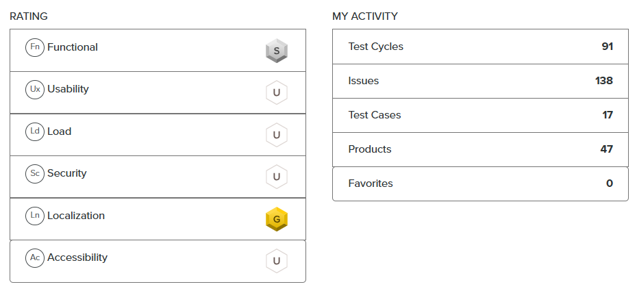

Volha Shunko
Manual QA Tester — web & mobile
I look for the bugs real users run into: broken flows, wrong redirects, half-translated pages. Then I write them up so a developer can reproduce them the first time.
What I bring to a team
Systematic coverage
On multi-regional sites I check the whole matrix: licence × language × user role × device. My reports say exactly where a bug reproduces and where it doesn't.
Localization testing
I spot untranslated fragments, mixed labels, wrong sorting and locale leaks. I'm a native speaker of Russian, Ukrainian and Belarusian and speak English (B1+). For other languages I use translation tools.
A business eye
I trained as an economist and ran my own business for years. I read a page the way a customer and an owner would, so I notice broken trust signals, confusing sign-up flows and anything that costs conversions.
Featured bug reports
A few reports that show different kinds of testing: functional, boundary values, accessibility, localization and AI features.
Loading reports…
Where I test
-
Sep 2025 — present
Crowdtester · uTest / Applause
Paid test cycles for international brands (under NDA).
- 91 test cycles · 47 products · 138 reported issues · 17 test cases
- Rating: Gold in Localization, Silver in Functional testing
- Industries: hospitality, fintech & crypto, banking, luxury and fashion retail, home improvement, e-commerce payments (Apple Pay), restaurant booking, ticketing
- Web, iOS and Android: exploratory, functional, payment-flow and localization testing
uTest profile snapshot (Sep 2026)

-
Jan 2026 — present
Tester · Test IO
- E-commerce search and filters, AI-powered generators in a web design tool
-
Mar — Sep 2026
QA Engineer Trainee · ITX (Capital.com)
Testing the Capital.com production website.
- Smoke, ad-hoc, retesting and localization testing across 6 regulatory licences (FCA, CySEC, ASIC, SCA, SCB, CMA)
- ~100 approved bug reports; bug review, retesting and checklist maintenance
- Desktop and mobile (Android) cross-browser checks
Skills
Testing
- Exploratory testing
- Functional testing
- Localization testing
- Smoke & retesting
- Cross-browser / cross-device
- Usability & basic accessibility
- Checklists & test cases
- Boundary values & equivalence classes
- Bug reporting & review
Tools & tech
- Chrome DevTools
- Postman (basic)
- VS Code
- uTest / Test IO platforms
- Screen recording & logs
- Screaming Frog
- HTML & CSS
- JavaScript basics
- GitHub Pages
Learning now
- API testing
- SQL
- Jira
- JavaScript Essentials (Cisco)
- Git
- AI tools for QA
Languages
- Russian
- native
- Ukrainian, Belarusian
- fluent
- English
- B1+ (work language for reports)
- Polish
- A1+ (learning)
Bug patterns worth re-checking
My “golden mine”: bug patterns from real cycles that tend to show up again on similar sites. Also checklists and lessons learned.
Courses, certificates & audio library
Formal training plus my own bilingual audio library for QA interview practice.